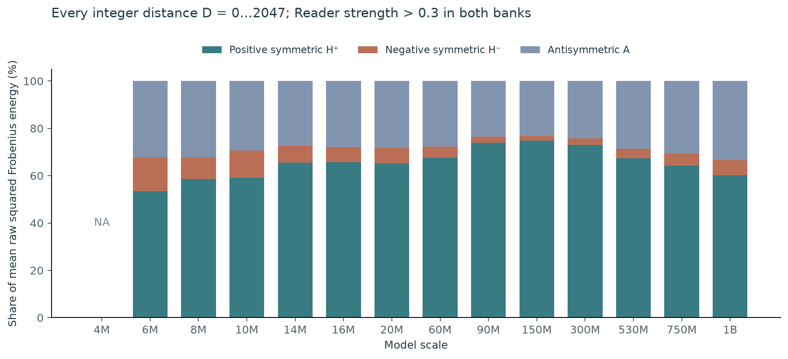
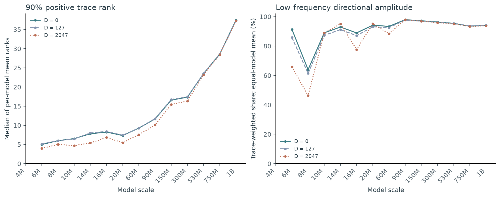
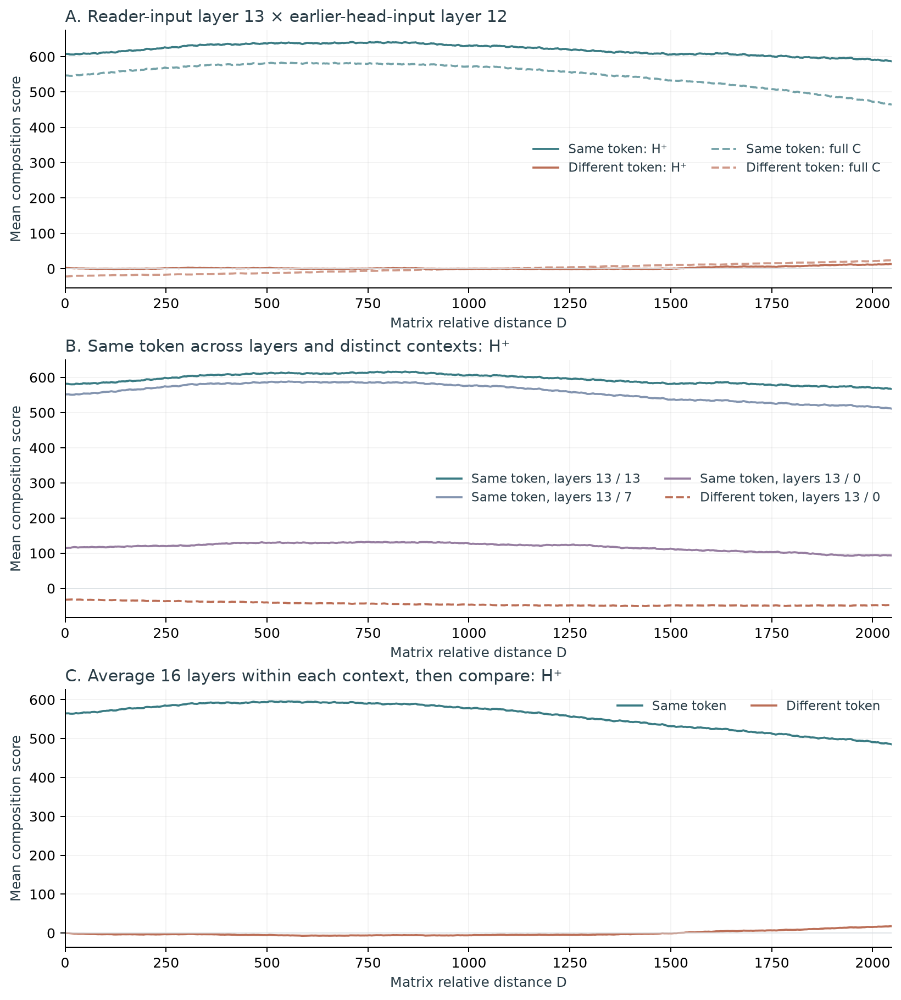
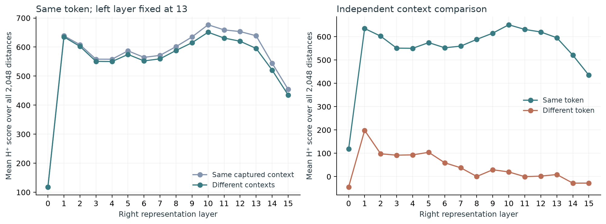
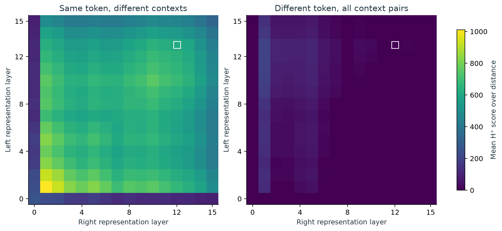

1. K-composition and the effective matching matrix
K-composition occurs when a later attention head computes its keys using information written into the residual stream by an earlier head. In the induction pattern [A][B] … [A] → [B], an earlier head can move information about the preceding A into the position of B. The later head’s query for the current A then matches that information in B’s key.
Let r denote the later reader and w an earlier head. Using column vectors, their K-composition matrix and its contribution to a query–key score are
Here x,y ∈ ℝd are residual-stream representations. Qr,Kr ∈ ℝh×d map them into the reader’s h-dimensional head space; Vw reads the earlier head’s input, and Ow writes its output back to the d-dimensional residual stream. Thus KrOwVwy is the earlier head’s contribution to the later key.
From residual coordinates to token-embedding coordinates
The 2022 diagnostic expresses K-composition in token-embedding coordinates and combines contributions from earlier heads. Let E ∈ ℝd×V contain the vocabulary’s token embeddings as columns. Then
The entry Mr,w[a,b] is the composition score between the embeddings of tokens a and b. Multiplication by E on the right and E⊤ on the left is what “embedding-sandwiched” means. The weight pw is the earlier head’s mean attention probability from a position to its immediately preceding position. “Previous-token-attention-weighted” therefore means that earlier heads contribute in proportion to this attention weight. The sum includes heads in earlier layers, with no division by the sum of the weights. Its raw trace correlated with the measured prefix-matching behavior in small attention-only models. [2]
The 2021 analysis used positive eigenvalues of an effective matching matrix in token-embedding coordinates as evidence for same-token matching through K-composition. The spectral intuition is that a real eigenvector with a positive eigenvalue receives a positive identical-vector score. Below, we examine this intuition for the residual-space matrix C, which acts on contextual token representations.
This post gives a symmetric spectral interpretation of why an induction head can assign high scores to inputs representing the same token identity. We first study identical-vector scores, meaning s(x,x) = x⊤Cx. We then compare contextual representations of the same token, which need not be identical vectors.
For the RoPE models studied below, relative distance enters through a head-space rotation:
D is the relative distance of the composition’s reader query and key. It is separate from the positions used to collect the contextual vectors. We hold those vectors fixed while varying the matrix distance.
2. What positive eigenvalues guarantee
The 2021 paper explicitly cautions against treating positive eigenvalues as a universal copying guarantee. Its exact wording is:
“there can be matrices with all positive eigenvalues that actually map some tokens to decreasing the logits of that same token.”
This excerpt appears in “Detecting Copying Behavior”, in the paragraph beginning with the qualification about copying matrices having positive eigenvalues. The original discussion concerns OV copying matrices; the same mathematical issue also arises when interpreting a nonsymmetric K-composition matrix.
For a real eigenvector vi and eigenvalue λi > 0, the relation Cvi = λivi gives
Suppose C has a real eigenvector basis and write x = ∑iaivi. Here vi denotes a right eigenvector, λi its eigenvalue, and ai the coefficient of that eigenvector in the input. Expanding the score gives
For a nonsymmetric matrix, these eigenvectors need not be perpendicular. Their cross terms can be negative even when every eigenvalue is positive. For example, take C = [[1,4],[0,2]]. Its eigenvectors are v1 = (1,0)⊤, v2 = (4,1)⊤, with eigenvalues 1 and 2. For x = (1,−1)⊤ = 5v1 − v2,
x⊤Cx = 1·(−3) + (−1)·(−2) = −3+2 = −1.
Equivalently, the eigenvector expansion yields positive diagonal contributions 52·1·1 + (−1)2·2·17 = 59, and the cross term 5·(−1)·(1+2)·4 = −60. Their sum is −1.
Why only the symmetric part remains
Decompose C = H + A, with H = ½(C+C⊤) symmetric and A = ½(C−C⊤) antisymmetric. Because A⊤ = −A,
so x⊤Ax = 0 and x⊤Cx = x⊤Hx.
A real symmetric matrix has an orthonormal eigenvector basis: unit eigenvectors ui perpendicular to one another. Collecting them as the columns of U gives U⊤U = I and H = UΛU⊤, where Λ contains the eigenvalues. This changes coordinates to independent spectral directions. Unlike the expansion above, it removes all cross terms, so each direction’s contribution and sign can be read separately:
We can therefore separate the positive and signed negative eigenvalue contributions:
C = H+ + H− + A.
Thus H+ guarantees a nonnegative identical-vector score, and a strictly positive score whenever the input projects onto at least one positive direction.
3. Positive symmetric energy across model scales
The positive and negative spectral parts occupy perpendicular subspaces; symmetric and antisymmetric matrices are also perpendicular under the Frobenius inner product. Their squared matrix norms therefore add:
We measure these energies in OLMo/DataDecide models across 14 scales, described in the model appendix. A reader qualifies when the correct successor key receives more than the chosen fraction of its attention, on average, in each of two independently seeded repeated-sequence evaluations. A threshold of 0.3 means more than 30% attention in both evaluations; it is not a trial success rate.
For each qualifying reader and its selected earlier head, we first average each raw squared norm over all 2,048 distances. We next average the qualifying head pairs within each model. Finally, we average those model values within each scale, giving every included model equal weight. A model with ten qualifying heads consequently has the same model-level weight as one with two. Models with no qualifying heads have no defined head average and are omitted.
F+ = EH⁺/EC, F− = EH⁻/EC, FA = EA/EC.
We average energies before taking their ratio. This preserves the magnitude of the matrices: for two observations with total energies 100 and 1 and positive energies 80 and 0, the ratio is 80/101, rather than the mean of 80/100 and 0/1.

Numerical values by scale
| Scale | H⁺ (%) | H⁻ (%) | A (%) |
|---|---|---|---|
| 4M | NA | NA | NA |
| 6M | 53.46 | 14.32 | 32.22 |
| 8M | 58.50 | 9.28 | 32.22 |
| 10M | 59.11 | 11.52 | 29.37 |
| 14M | 65.58 | 7.06 | 27.36 |
| 16M | 65.67 | 6.41 | 27.92 |
| 20M | 65.18 | 6.48 | 28.34 |
| 60M | 67.50 | 4.87 | 27.64 |
| 90M | 73.96 | 2.51 | 23.53 |
| 150M | 74.80 | 2.06 | 23.14 |
| 300M | 72.98 | 2.71 | 24.31 |
| 530M | 67.39 | 4.02 | 28.59 |
| 750M | 64.33 | 5.05 | 30.62 |
| 1B | 60.19 | 6.35 | 33.46 |
At 90M and the >0.3 threshold, H+, H−, and A account for 73.96%, 2.51%, and 23.53% of the mean raw energy.
The positive component guarantees a nonnegative contribution when the same token is represented by the same vector on both sides. Its high matrix-energy share suggests a stronger positive matching tendency. Two issues remain: the same token identity can have different representations across contexts or layers, including different projections within the positive subspace; and a positive same-token score need not exceed the score of another token.
4. Two properties of the positive component
We find two matrix properties: much of the positive spectrum is concentrated in relatively few directions, and those directions map predominantly into low-frequency RoPE planes.
A compact positive subspace
Order the positive eigenvalues from largest to smallest. The 90%-positive-trace rank is the fewest directions whose eigenvalues sum to at least 90% of the positive trace:
The table gives the matrix size, full residual dimension, reader-head dimension, positive rank, and retained rank at D=127. All heads satisfy the >0.3 criterion. The positive rank is an equal-model mean; the retained rank is the median of model-wise head averages, matching the figure.
| Scale | H⁺ matrix size | Residual d | Head h | Positive rank, mean | 90%-trace rank, median |
|---|---|---|---|---|---|
| 4M | 64 × 64 | 64 | 8 | NA | NA |
| 6M | 96 × 96 | 96 | 12 | 12.00 | 5.17 |
| 8M | 128 × 128 | 128 | 16 | 16.00 | 6.00 |
| 10M | 144 × 144 | 144 | 18 | 18.00 | 6.46 |
| 14M | 192 × 192 | 192 | 24 | 24.00 | 8.00 |
| 16M | 208 × 208 | 208 | 26 | 26.00 | 8.40 |
| 20M | 192 × 192 | 192 | 24 | 24.00 | 7.41 |
| 60M | 384 × 384 | 384 | 32 | 32.00 | 9.29 |
| 90M | 528 × 528 | 528 | 44 | 44.00 | 11.75 |
| 150M | 768 × 768 | 768 | 64 | 64.00 | 16.75 |
| 300M | 1024 × 1024 | 1024 | 64 | 64.00 | 17.43 |
| 530M | 1344 × 1344 | 1344 | 84 | 84.00 | 23.53 |
| 750M | 1536 × 1536 | 1536 | 96 | 96.00 | 28.67 |
| 1B | 2048 × 2048 | 2048 | 128 | 128.00 | 37.27 |
At 90M, the median retained rank is 11.75, compared with head width 44 and residual width 528. The directions describe a compact part of the matching operator; their alignment with token representations is examined below.
Mapping these directions into RoPE planes
Let Uk contain the retained residual-space eigenvectors. To examine their frequencies, we map each direction ui into reader head space in two ways:
The query side, qi, is the direction as seen by the later reader’s query. The key–output–value side, ti, follows the earlier head’s value map, its output map, and the later reader’s key map. Both vectors live in the same head space where RoPE rotates coordinate pairs.
A plane with angular frequency ωp is classified as low-frequency if it turns less than once across the context: 2047ωp < 2π. If Plow projects onto those planes, the query-side image-energy fraction is ‖PlowQrUk‖F2/‖QrUk‖F2; the key-side fraction uses KrOwVw in place of Qr.
The figure measures a related quantity, the trace-weighted low-frequency directional amplitude. Within plane p, let qip,tip denote the two-dimensional parts of the mapped vectors. Their score contribution oscillates as aipcos(Dωp) + bipsin(Dωp), with amplitude
bip = qip,1tip,2 − qip,2tip,1,
mip = √(aip2+bip2) = ‖qip‖‖tip‖.
We compute each direction’s low-frequency share and then average the retained directions using their positive eigenvalues as weights:

At 90M and D=127, the mean query-side and key-side low-frequency image-energy shares are 97.75% and 96.75%; the mean directional amplitude share is 97.68%. Slowly rotating planes provide a mechanism by which the dominant matching contribution can remain strong across distance.
What is averaged across every distance?
The energy plot averages every integer distance for all included scales. The cross-scale rank and directional-amplitude plot above currently uses three reference distances; an all-distance mean of these two measurements is not available for the full 14-scale cohort.
For the selected C4-90M model, retained spectra do cover every distance. Averaging the rank of HD+ separately at each distance gives:
| Reader / earlier head | Mean 90%-trace rank | Range across D |
|---|---|---|
| L13H8 / L12H7 | 10.228 | 9–11 |
| L13H7 / L12H7 | 10.402 | 9–11 |
| L13H0 / L12H7 | 10.331 | 10–11 |
| L9H4 / L8H3 | 12.423 | 12–14 |
For reader 13/head 8 and earlier head 12/head 7, the all-distance mean directional amplitude share is 99.20%, with the retained subspace recalculated from each distance’s cached spectrum. These are means of the per-distance measurements, not measurements of an averaged matrix. All 2,048 values (CSV).
5. Same token, different contexts and layers
We study DataDecide-c4-90M at step 29,901, with reader layer 13/head 8 and earlier head layer 12/head 7. Its reader strength is 0.89593: the correct successor key receives an average 89.593% of the attention probability in the weaker of the two repeated-sequence evaluation banks. Layers and heads are numbered from zero.
How the contextual representations are collected
For each token, we create random synthetic backgrounds and insert the target token at an anchor position. We use two random-seed banks, four placement-distance settings (15,127,1007,2015), and eight repetitions. Each setting is collected once near the beginning of a sequence and once farther into an independently generated sequence. This yields 128 different contexts per token at each of 16 layers: 64 earlier-position contexts and 64 later-position contexts. We save the target token’s residual representation before the attention computation in every layer.
The earlier positions lie at 16–31; the later positions are offset by the placement distance. The pooled comparison below uses all 128 contexts on both sides, including all four combinations of earlier/later positions. The target is token 5195 ( spread, including its leading space); the comparison token is 3893 (a newline followed by six spaces). Their random backgrounds and positions can differ, so matching capture indices across these two tokens does not mean identical textual contexts.
Before scoring, each residual vector is divided by its root-mean-square magnitude, as in the model’s RMSNorm. The learned coordinate-wise scaling is already included in the operator. We report x⊤CDy and its H+ contribution directly, with no additional unit-length normalization or head-width scaling. These are composition-path scores; attention probabilities would additionally require the remaining attention computation and a softmax.
A. Same token in different contexts
Write xt,ℓ,c for token t at layer ℓ in context c. For a fixed pair of layers, we compare the same token across all distinct contexts:
There are 128 × 128 possible pairs. Excluding the 128 same-observation pairs leaves 128 × 127 distinct-context comparisons. For different token identities, we include all 128 × 128 pairs:
Layers 13 and 12 are the actual input layers of the selected reader and earlier head. At these layers, the all-distance mean H+ score is 620.07 for the same token across distinct contexts, versus 2.17 for the comparison token.
B. Same token across layers
We keep the operator fixed and vary the layers supplying the token vectors. This tests representations from different depths using the same matching matrix. We separately compare the same captured context across layers and distinct contexts across layers. The curves therefore separate a layer change from a context change.
C. Average layers within each context, then compare tokens
For each token and context, first average its 16 layer representations. Then compare those 128 context-specific means. The context is held fixed while averaging layers:
S̄different(D) = (1/1282)∑c,c′x̄t,c⊤HD+x̄t′,c′.
The corresponding same-token control uses distinct contexts, as in A. Its mean over distance is 558.87, compared with -1.16 for the different token.


Choose two representation layers
Compare same-token and different-token H⁺ curves for the fixed reader 13/head 8 operator.
Loading curves…
The interactive trace samples every eighth distance plus 2047. Static figures and the downloadable array retain all 2,048 distances.

In this two-token example, H+ gives a high average score to the same token across contexts and layers, while the comparison token receives a much lower mean score. The curves connect the positive component’s matrix structure to contextual identity matching in this selected pair.
6. Questions for induction-circuit initialization
- How does token-identity information change across layers?
- Do the dominant positive directions coincide across different reader–earlier-head pairs, or can different bases support the same persistent token representations?
- Which residual-space directions retain token-identity information across layers?
Appendix: models and evaluation
The cross-scale cohort contains 50 DEV checkpoints per scale: 25 training-data recipes and two seed tags, for 700 checkpoints. The reference-distance analysis uses this full cohort; the frozen all-distance energy export contains 697 available models. Architecture and selected training budgets are listed below.
| Scale | Layers | Residual d | Heads/layer | Head h | Step | Training tokens (B) |
|---|---|---|---|---|---|---|
| 4M | 8 | 64 | 8 | 8 | 5,725 | 0.375 |
| 6M | 8 | 96 | 8 | 12 | 9,182 | 0.602 |
| 8M | 8 | 128 | 8 | 16 | 13,039 | 0.855 |
| 10M | 8 | 144 | 8 | 18 | 15,117 | 0.991 |
| 14M | 8 | 192 | 8 | 24 | 21,953 | 1.439 |
| 16M | 8 | 208 | 8 | 26 | 24,432 | 1.601 |
| 20M | 16 | 192 | 8 | 24 | 14,584 | 1.912 |
| 60M | 16 | 384 | 12 | 32 | 29,042 | 5.710 |
| 90M | 16 | 528 | 12 | 44 | 29,901 | 9.798 |
| 150M | 12 | 768 | 12 | 64 | 37,500 | 14.746 |
| 300M | 16 | 1024 | 16 | 64 | 45,000 | 29.491 |
| 530M | 16 | 1344 | 16 | 84 | 51,250 | 47.022 |
| 750M | 16 | 1536 | 16 | 96 | 27,500 | 32.440 |
| 1B | 16 | 2048 | 16 | 128 | 69,369 | 100.016 |
All use RMSNorm with learned affine scaling, SwiGLU, RoPE base 10,000, a maximum sequence length of 2048, vocabulary size 50,280, and embedding-table size 50,304. The two DEV seed tags are default and small-aux-2 below 1B; the 1B tags are default and large-aux-2. Training budgets differ across scales.
The 25 training-data recipes
c4, dclm-baseline, dclm-baseline-25p-dolma1.7-75p, dclm-baseline-50p-dolma1.7-50p, dclm-baseline-75p-dolma1.7-25p, dclm-baseline-qc-10p, dclm-baseline-qc-20p, dclm-baseline-qc-7p-fw2, dclm-baseline-qc-7p-fw3, dclm-baseline-qc-fw-10p, dclm-baseline-qc-fw-3p, dolma1_6plus, dolma1_7, dolma1_7-no-code, dolma1_7-no-flan, dolma1_7-no-math-code, dolma1_7-no-reddit, falcon, falcon-and-cc, falcon-and-cc-qc-10p, falcon-and-cc-qc-20p, falcon-and-cc-qc-orig-10p, falcon-and-cc-qc-tulu-10p, fineweb-edu, fineweb-pro
Each reader-evaluation bank contains 32 independently sampled 128-token prefixes, each repeated to form a 256-token sequence. For query positions 128–254, we measure the attention probability on the corresponding successor key in the first copy, at position q−127. The bank score averages 127 query positions and then 32 sequences. Reader strength is the smaller bank score; qualification requires both bank scores to exceed the threshold strictly.
The 90M case uses revision 2e612c115480fa22d56ab35f1b7468a686c32ad9 of allenai/DataDecide-c4-90M, branch step29901-seed-default. The 128-context curves are calculated from retained residuals and cached matrices, with no new model forward passes. Complete pair means are computed exactly by bilinearity; the same-token calculation subtracts same-index pairs.
Data and figure downloads
- All-distance matrix-energy composition
- Cross-scale reference-distance rank and frequency values
- 90M per-distance rank and directional amplitude
- 128-context score curves at selected layer pairs
- Context-specific layer-averaged score curves
- All 256 layer-pair means · Complete 2,048-distance arrays
- Context protocol, score definitions, and source hashes
- Architecture and training budgets · Configuration and rank details · All 700 pinned model revisions
- Figure-source provenance
- All current figures and supporting tables (ZIP)
References
- Elhage et al. (2021). A Mathematical Framework for Transformer Circuits. See copying matrices and checking the mechanistic theory.
- Olsson et al. (2022). In-context Learning and Induction Heads. See QK eigenvalue trace and validation of the eigenvalue diagnostics.